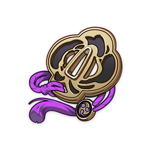

Genshin Impact · Versión 7.2
Análisis del Rol y Escalado
Xingqiu es un personaje de elemento Hydro originario de Liyue que utiliza Espada Ligera y se posiciona en el tier T1 (A+) Sub-DPS dentro del rol de Off-Field Sub-DPS, Aplicador Hydro & Reductor de Daño. Su rendimiento en combate gira en torno a este eje principal: Escalado por Ataque (ATQ%) con Alta Demanda de Recarga.
Para maximizar su aporte en el equipo, la configuración prioritaria combina Espada de Sacrificio con el conjunto de artefactos Emblema del Destino (4 piezas), respetando la jerarquía de estadísticas 1. Recarga de Energía% (180% - 210% con Sacrificio R3+) > 2. Prob. Crítica / Daño Crítico > 3. ATQ% > 4. Maestría Elemental y subiendo sus habilidades en orden: Definitiva (Q) > Habilidad Elemental (E) >>> Ataques Básicos.
Mejores Armas
Opciones recomendadas ordenadas por rendimiento según el meta actual y compatibilidad con sus rotaciones:
-
 Espada de Sacrificio ★★★★Opción por rolR3+ reinicia la E y genera dobles partículas, resolviendo toda su recarga.
Espada de Sacrificio ★★★★Opción por rolR3+ reinicia la E y genera dobles partículas, resolviendo toda su recarga. -
 Espada de Favonius ★★★★Opción por rolBatería sólida si Sacrificio no tiene refinamientos altos.
Espada de Favonius ★★★★Opción por rolBatería sólida si Sacrificio no tiene refinamientos altos. -
 Cortador de Jade Primordial ★★★★★Opción por rolMáximo daño personal si el equipo cubre su recarga.
Cortador de Jade Primordial ★★★★★Opción por rolMáximo daño personal si el equipo cubre su recarga. -
 Vado del Río Ceniciento ★★★★Opción por rolBuena opción F2P de pesca con recarga.
Vado del Río Ceniciento ★★★★Opción por rolBuena opción F2P de pesca con recarga.
Mejores Sets de Artefactos
Combinaciones de 4 piezas o mezclas de 2 piezas para maximizar su contribución:
-

Emblema del Destino (4 piezas) BiS Daño PersonalMultiplica el daño de cada espada de lluvia según su ER.
-
 Nobleza Obligada (4 piezas) Soporte Equipo
Nobleza Obligada (4 piezas) Soporte Equipo+20% ATQ para todo el equipo si nadie más lo lleva.
Estadísticas Principales y Secundarias
Atributos prioritarios en artefactos para un balance óptimo de daño o soporte:
| Pieza | Estadística Principal |
|---|---|
| Reloj (Arenas) | Recarga de Energía% o ATQ% |
| Cáliz | Bono Daño Hydro% |
| Corona | Prob. Crítica% / Daño Crítico% |
Prioridad de Subestadísticas
- 1. Recarga de Energía% (180% - 210% con Sacrificio R3+)
- 2. Prob. Crítica / Daño Crítico
- 3. ATQ%
- 4. Maestría Elemental
Prioridad de Talentos
Definitiva (Q) > Habilidad Elemental (E) >>> Ataques Básicos
Objetivos de Estadísticas (Nivel 90)
Las metas numéricas exactas de Xingqiu varían según el arma equipada, los refinamientos y la generación de partículas de su equipo.
Prioriza cumplir primero la Recarga de Energía necesaria para mantener la rotación fluida de su Habilidad Definitiva antes de buscar subestadísticas ofensivas adicionales.
Con piezas principales de Recarga de Energía% o ATQ%, Bono Daño Hydro% y Prob. Crítica% / Daño Crítico%, enfoca tu farmeo de artefactos en: 1. Recarga de Energía% (180% - 210% con Sacrificio R3+) > 2. Prob. Crítica / Daño Crítico > 3. ATQ% > 4. Maestría Elemental (Escalado por Ataque (ATQ%) con Alta Demanda de Recarga).
Talentos de Combate y Materiales (Nivel 1 al 10)
Habilidades principales de Xingqiu y desglose exacto de libros, materiales y Mora para mejorar sus talentos:


Composiciones de Equipo Recomendadas
Alineaciones con mayor sinergia elemental y amplificación de daño en el Abismo y Teatro Fantasía:
Materiales de Ascensión (Nivel 1 al 90)
Recursos totales requeridos para desbloquear las 6 fases de ascensión de Xingqiu. Coste total de Mora en ascensiones: 420.000 Mora.


Sinergias y Guías Relacionadas
Explora las fichas de armas, artefactos y materiales de los principales compañeros de equipo para Xingqiu: